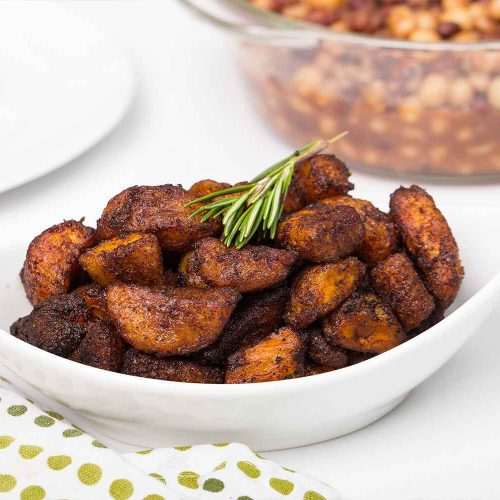

Kelewele

Kelewele is a much-loved Ghanaian street snack. Ripe plantain is cut into cubes, coated in a spicy mix of ginger, pepper, and cloves, then fried until golden and sticky at the edges. It is sold by roadside vendors in the evening and eaten as a snack or a side dish.
Ingredients
- Ripe plantains
- Chili peppers
- 1/4 medium onion
- 2 thumb-sized pieces of ginger
- 2 to 4 calabash nutmegs
- 1/4 teaspoon of cloves
- Salt, to taste
- Oil, for frying
Cooking Instructions
- Peel the ripe plantains and cut them into bite-sized cubes.
- Blend the chili peppers, onion, ginger, calabash nutmeg, cloves, and salt into a thick paste.
- Mix the paste with the plantain cubes until they are well coated.
- Heat the oil in a pan and fry the plantain until golden brown.
- Drain on paper towels and serve hot.